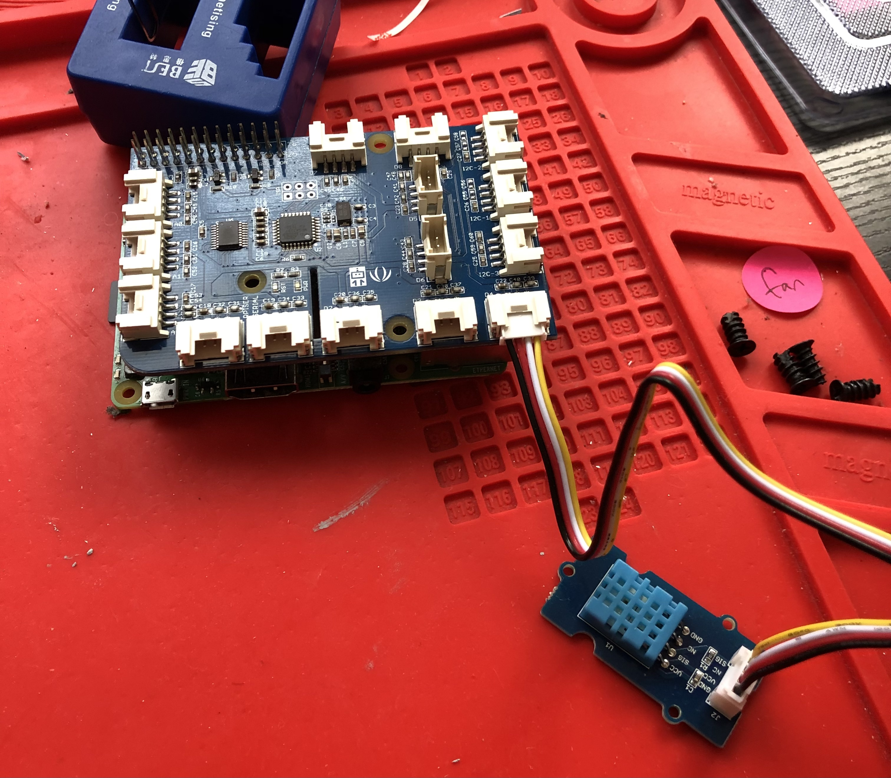

Environmental and Motion Sensing Iot Project
Github repository link: https://github.com/GrantUrquhart/grovepi-sensing-project
Status: In Progress (Expected Completion: Spring 2024)
Overview:
This project involves developing an Internet of Things (IoT) system using a Raspberry Pi 3B with a Grove Pi Plus Hat and Raspberry Pi OS Lite. The goal is to implement various sensors for environmental and motion sensing, establish cloud connectivity with AWS IoT Core, and ultimately gather valuable data for analyzing bike rides. The insights gained will help in understanding the comfort of bike rides, preferred paths, and environmental conditions.
Key Achievements:
- Successfully implemented sound and temperature and humidity sensors on the Raspberry Pi.
- Established connection with AWS IoT Core for cloud layer integration.
- In progress on implementing GPS and air quality sensors to enhance data collection capabilities.
Technologies Used:
- Raspberry Pi 3B with Grove Pi Plus Hat
- Raspberry Pi OS Lite (Command Line Interface)
- AWS IoT Core and related AWS database and dissemination services
Goals and Future Work:
The end goal of this project is to outfit devices to bikes to gather comprehensive data on bike rides, including environmental conditions and preferred paths. I am also working on developing a front-end interface to access these insights from anywhere, making the data more actionable and useful for improving biking experiences.